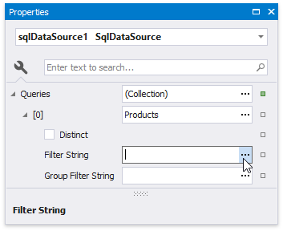

Filter Data at the Data Source Level
This tutorial illustrates how to filter data at the report data source level, as opposed to the report level. This approach is recommended when dealing with comparatively large data sources when the retrieval process is slow.
Create a new report or open an existing one.
Bind you report to a required data source. See the Bind to Data section to learn more about providing data to reports.
Switch to the Field List and drop the required fields onto the report's Detail band.

Select the data source in the Report Explorer, expand its Queries collection property in the Property Grid and click the ellipsis for the Filter String property of the required query.

In the invoked Filter Editor, construct an expression where the data fields are compared with the required values as shown below.

Every filter condition consists of three parts:
- A data field name.
- Criteria operator, such as Equals, Is less than, Is between, etc.
A static operand value, another data field or a query parameter. See the Specify Query Parameters topic to learn about embedding these parameters into filter conditions.
You can arrange specific conditions into groups with And, Or, Not And, and Not Or operators.
Alternatively, you can specify a filter expression when creating a query using the Query Builder. To invoke the Filter Editor at this stage, click the Filter... button.
Switch to Print Preview to see the result.